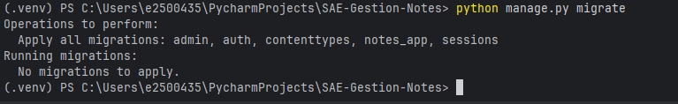
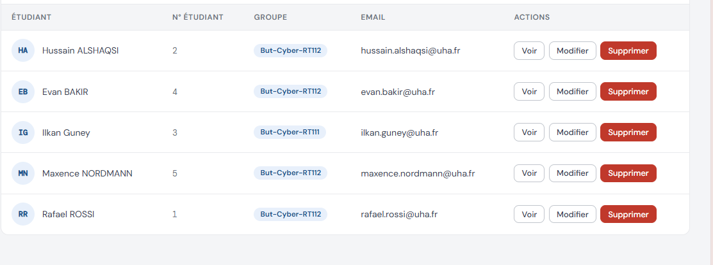

Mes Réalisations
& Preuves Techniques
Détail des tâches accomplies lors du déploiement de l'infrastructure
1. Infrastructure Réseau & Système (Linux Debian)
Couche 3Sur la machine virtuelle Debian BDD, j'ai configuré les paramètres réseaux pour qu'on a acess a la vm depuis des pc distant
- Mode Accès par pont : j'ai mis l'interface sur VirtualBox en mode accés par pont pour sortir de la VM
-
Résolution DNS locale : Ajout du nom d'hôte dans
/etc/hostspour utiliser l'aliasserveur-notesà la place de l'IP brute. -
Écoute réseau MariaDB : Altération du fichier
50-server.cnfpour lever la restriction locale et accepter les requêtes distantes sur toutes les interfaces.
Preuve A — Liaison Django-VM réussie
Capture d'écran du terminal Windows lors de l'exécution de
python manage.py migrate affichant "No migrations to apply" sans erreur.
C'est la preuve que Django communique bien avec MariaDB sur la VM.

2. Gestion et Sécurisation SQL (MariaDB)
SécuritéJ'ai mis des règles d'accès à la base de données pour un accès sécurisée:
- Création des comptes nominatifs :
ilkan,rafael,hussain. - Attribution sécurisée des mots de passe individuels.
- Nous avons configuré les privilèges SQL de l'utilisateur de manière à limiter ses accès uniquement aux tables de la base de données gestion-notes.
gestion-notes.
Preuve B — Configuration Django (settings.py)
Extrait du fichier
settings.py de l'application Django ciblant le serveur MariaDB distant.
gestion_notes/settings.py
DATABASES = {
'default': {
'ENGINE': 'django.db.backends.mysql',
'NAME': 'gestion-notes',
'USER': 'ilkan',
'PASSWORD': 'toto',
'HOST': 'serveur-notes', # alias /etc/hosts → IP VM
'PORT': '3306',
}
}
3. Développement Backend (Python / Django)
Dev WebEn parallèle de la partie infrastructure, j'ai contribué au développement des vues et de la logique métier de l'application :
- Traitement des formulaires d'ajout d'étudiants et de notes.
- Calcul dynamique des moyennes par matière.
- Rendu des résultats en temps réel dans les templates HTML.
Preuve C — Interface applicative fonctionnelle
Capture d'écran de l'interface web
gestion-notes
dans le navigateur, qui montre une liste d'étudiants.
